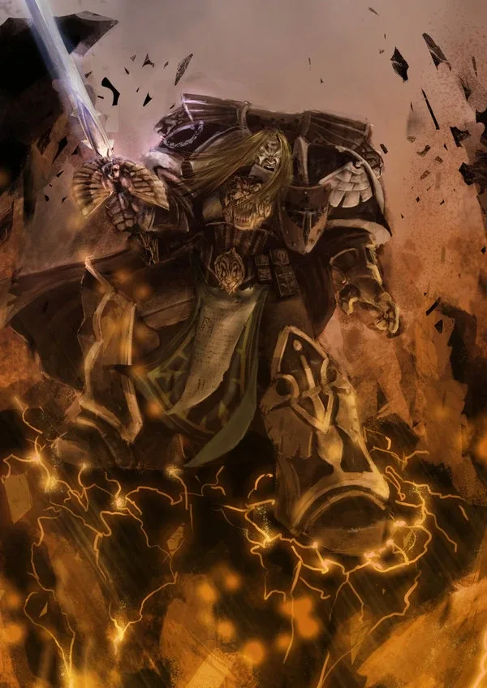
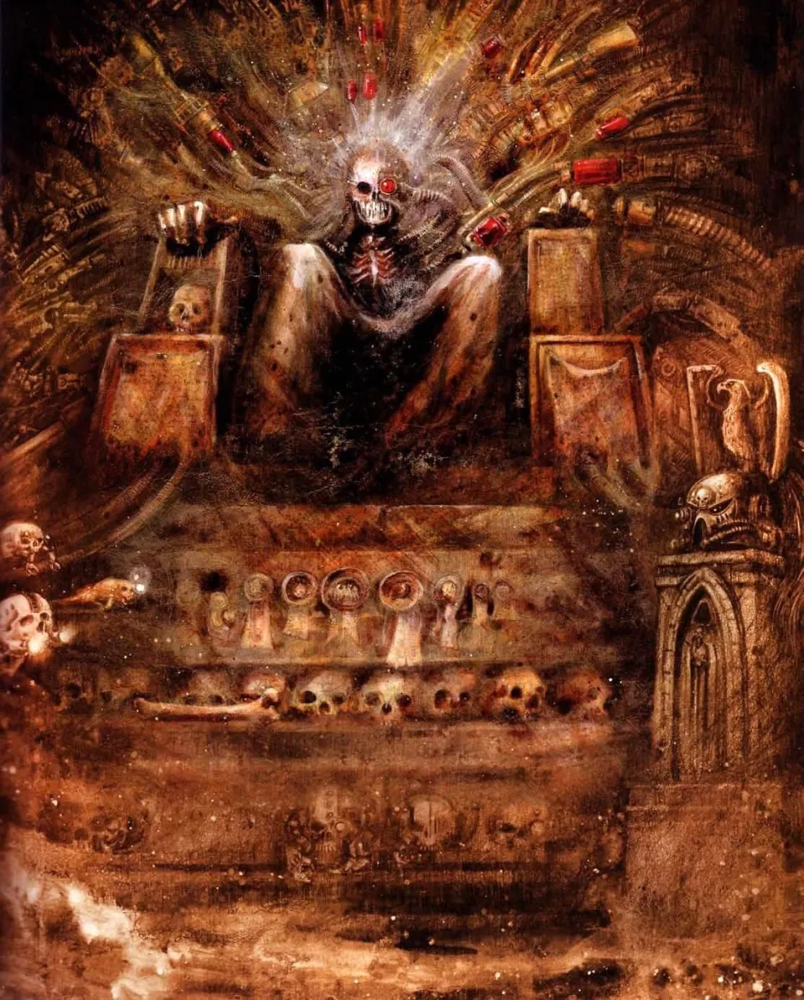

01ภาพรวม
การตายของ Horus บนเรือ Vengeful Spirit ทำให้ฝ่ายทรยศแตกพ่าย แต่ไม่ได้ทำให้พวกเขาหายไป Legion ทรยศยังยึดดาวไว้นับพันดวงทั่วจักรวรรดิ ก่อนจักรพรรดิจะเงียบไปตลอดกาล พระองค์ตัดสินให้ผู้ทรยศทั้งหมดเป็น Excommunicate Traitoris และต้องถูกขับไล่เข้าไปใน Eye of Terror
สงครามไล่ล่าที่ตามมาเรียกว่า Great Scouring (เกรท สเการิ่ง — "การกวาดล้างครั้งใหญ่") กินเวลาราว 7 ปี จากนั้นจักรวรรดิเข้าสู่ช่วง Time of Rebirth ซึ่ง Guilliman ปฏิรูปทุกอย่างเพื่อไม่ให้ Heresy เกิดขึ้นอีก

02สงครามไล่ล่า
ไม่ใช่ทุก Legion ที่หนีทันที:
Iron Warriors
ยึดป้อมปราการบนดาวที่พิชิตไว้แน่น ต้องใช้เวลาหลายสิบปีกว่าจะขับออกไปได้ ศึกที่เลื่องชื่อคือ Iron Cage ที่ Perturabo วางกับดัก Imperial Fists ไว้ในวงล้อมป้อม จนต้องให้ Ultramarines เข้าไปช่วย — ความสูญเสียครั้งนี้มีส่วนทำให้ Dorn ยอมรับแนวทางแบ่ง Legion
Night Lords
ยังก่อความหวาดกลัวทางขอบตะวันออก จนกระทั่ง Konrad Curze ถูกนักฆ่าจาก Officio Assassinorum สังหารบนดาว Tsagualsa — ความตายที่เขามองเห็นล่วงหน้าและไม่ได้หลบหนี
Alpha Legion
Guilliman เชื่อว่าสังหาร Alpharius ได้บนดาว Eskrador แต่ด้วยธรรมชาติของ Alpha Legion ไม่มีใครแน่ใจว่าคนที่ตายคือใครกันแน่
Legion อื่น ๆ
Sons of Horus, Death Guard, Emperor's Children, World Eaters และ Thousand Sons หนีเข้า Eye of Terror ที่นั่นพวกเขาแตกเป็นกลุ่มย่อยและรบกันเองใน Legion Wars
นอกจากนี้ Lion El'Jonson กลับไปยังดาว Caliban บ้านเกิดของ Dark Angels และพบว่า Luther ผู้ที่เขาไว้ใจก่อกบฏ การรบจบลงด้วยดาวแตกเป็นเสี่ยง Lion หายตัวไป และความลับเรื่อง Fallen Angels กลายเป็นปมที่ Dark Angels ซ่อนมาหมื่นปี (ดู Dark Angels)

โลกที่ไม่เลือกข้างระหว่างสงคราม หรือแยกตัวออกไปเพื่อเป็นอิสระ ก็ถูกลงโทษอย่างไร้ความปรานี ดาวที่ถูก Chaos แปดเปื้อนถูกเผาทั้งดวง และอยู่ใต้การดูแลของ Inquisition ที่เพิ่งก่อตั้ง
03Codex Astartes และ Second Founding
บทเรียนใหญ่ที่สุดของ Heresy คือไม่ควรให้ใครคุม Space Marine หลายหมื่นนายได้อีก Guilliman ซึ่งได้รับเลือกเป็น Lord Commander of the Imperium เขียน Codex Astartes คัมภีร์ว่าด้วยการจัดองค์กรและยุทธวิธีของ Space Marine และเสนอให้แบ่งทุก Legion เป็นหน่วยย่อยที่เรียกว่า Chapter ละราว 1,000 นาย
ฝ่ายเห็นด้วย
- Roboute Guilliman
- Corvus Corax
- Jaghatai Khan
- High Lords of Terra
ฝ่ายคัดค้าน
- Rogal Dorn — เกือบนำไปสู่ความขัดแย้งรุนแรง (First Schism)
- Leman Russ
- Vulkan
การปฏิรูปผ่านไปแม้มีผู้คัดค้าน และเกิดขึ้นราวเจ็ดปีหลังการตายของ Horus เรียกว่า Second Founding (การก่อตั้งครั้งที่สอง)
- Chapter หนึ่งในแต่ละ Legion ได้ใช้ชื่อ ตรา และสีเดิมของ Legion เช่น Ultramarines, Blood Angels
- Chapter ที่เหลือได้ชื่อและตราใหม่ กลายเป็น Successor Chapters เช่น Black Templars (จาก Imperial Fists), Flesh Tearers (จาก Blood Angels), Novamarines (จาก Ultramarines)
- Ultramarines ที่ใหญ่ที่สุดถูกแบ่งเป็น Chapter มากที่สุด ทำให้สายเลือดของ Guilliman มีจำนวนมากกว่าใครในยุค 40K
- Chapter ไม่ขึ้นกับหน่วยงานใดยกเว้น High Lords of Terra ไม่มีใครคุมได้มากกว่าหนึ่ง Chapter
- Iron Hands, Salamanders และ Raven Guard ที่แทบสูญสิ้นที่ Isstvan ค่อย ๆ ฟื้นจาก gene-seed ที่เหลืออยู่
Chapter บางแห่ง เช่น Space Wolves, Blood Angels และ Dark Angels ทำตาม Codex เพียงบางส่วนหรือแทบไม่ทำเลย แสดงถึงความไม่เห็นด้วยที่ยังคงอยู่
04การปฏิรูปจักรวรรดิ
แยกกองทัพ
Imperial Army ถูกแยกเป็น Imperial Guard (ปัจจุบันคือ Astra Militarum) กับ Imperial Navy — ทหารบกไม่มีเรือของตัวเอง ทหารเรือไม่มีทหารบก ไม่มีใครก่อกบฏได้โดยลำพัง
High Lords of Terra
Council of Terra กลายเป็นสภา High Lords ผู้นำสูงสุด 12 คนที่ปกครองในนามจักรพรรดิ Adeptus Mechanicus ได้ที่นั่งในสภาเป็นครั้งแรก
Inquisition และ Grey Knights
Inquisition ที่ Malcador วางรากฐานไว้ช่วงท้ายสงครามรับหน้าที่ล่าภัยจาก Chaos อย่างลับ ๆ ส่วนนักรบ 8 คนที่ Nathaniel Garro รวบรวมกลายเป็นแกนของ Grey Knights
ศาสนาแทนเหตุผล
Imperial Truth ที่ไม่มีพระเจ้าถูกทิ้ง Imperial Cult ที่บูชาจักรพรรดิเป็นพระเจ้า ซึ่งเคยเป็นสิ่งต้องห้าม กลายเป็นเครื่องมือควบคุมสังคม และภายหลังเป็นศาสนาประจำจักรวรรดิ
05จุดจบของยุค Primarch
หลังการปฏิรูป Primarch ที่เหลือค่อย ๆ หายไปจากประวัติศาสตร์ทีละคน:
- Leman Russ — ออกเดินทางเข้า Eye of Terror และไม่กลับมา Space Wolves เชื่อว่าเขาจะกลับมาใน "วันสิ้นโลก" ของหมาป่า
- Jaghatai Khan — หายเข้าไปใน Webway ระหว่างไล่ล่า Drukhari
- Corvus Corax — เข้า Eye of Terror เพื่อตามล่าผู้ทรยศ ทิ้งคำว่า "Nevermore"
- Rogal Dorn — ไม่มีบันทึกการตายที่แน่ชัด สิ่งเดียวที่พบคือกระดูกมือของเขาบนซากเรือของ Chaos ซึ่ง Imperial Fists เก็บเป็นวัตถุศักดิ์สิทธิ์
- Vulkan — หายตัวไป (ภายหลังเปิดเผยว่าเขาเป็นอมตะและกลับมาช่วงสงคราม Beast)
- Roboute Guilliman — ถูก Fulgrim แทงด้วยอาวุธอาบพิษ ร่างถูกเก็บในสนามหยุดเวลาบน Macragge หมื่นปี จนฟื้นคืนชีพในยุค 41 (ดู Indomitus Crusade)
นับแต่นั้น จักรวรรดิถูกปกครองโดยมนุษย์ธรรมดา — ซึ่งจักรพรรดิเองก็ตั้งใจไว้แต่แรก แต่ในรูปแบบที่ระแวง กดขี่ และหยุดนิ่ง จนกลายเป็นจักรวรรดิที่เรารู้จักในยุค 40K ดูต่อที่ War of the Beast

06แหล่งข้อมูลและหมายเหตุ
เนื้อหาหน้านี้สรุปและแปลเป็นภาษาไทยจากบทความใน Warhammer 40k Wiki (Fandom) ซึ่งเรียบเรียงจากหนังสือ Codex, หนังสือชุด Horus Heresy ของ Forge World และนิยาย Black Library ด้านล่างนี้ (ตรวจสอบ ต.ค. 2026)
เนื้อเรื่อง Warhammer ถูกเขียนเพิ่มและแก้ไขมาตลอดหลายสิบปี ปี จำนวน และรายละเอียดบางจุดต่างกันไปตามหนังสือแต่ละเล่ม หน้านี้ใช้ฉบับที่แหล่งอ้างอิงส่วนใหญ่ยอมรับ และบอกไว้เมื่อมีหลายฉบับ